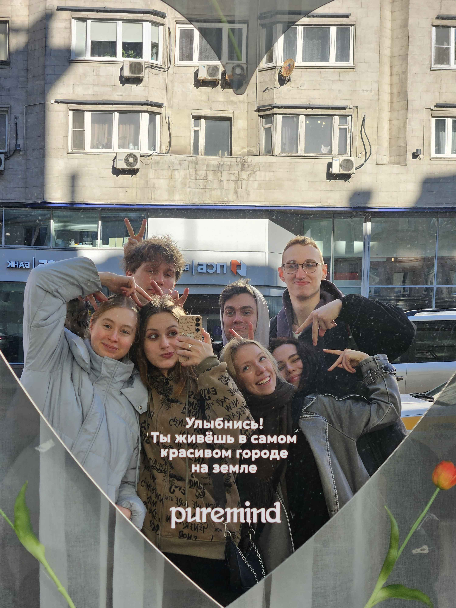

Сообщество
Наши принципы
«Человек навсегда» для нас — не абстракция, а рабочий принцип. В эпоху транзакционных связей мы верим, что самые надёжные результаты рождаются там, где есть долгосрочное доверие, личная ответственность и готовность вкладываться в общее дело. Здесь отношения выстраиваются не на основе формального статуса или выгоды, а на искренности, взаимном уважении и общих ценностях.
Наше пространство создано для тех, кто не боится работать над собой и готов делиться опытом. Мы регулярно обмениваемся знаниями, поддерживаем инициативы, совместно решаем задачи и создаём среду, где каждый может быть собой, не теряя профессионализма и человечности. Каждая встреча, диалог или совместный проект — это возможность выйти за рамки привычного, получить честную обратную связь и найти союзников для значимых начинаний.

Единство
Мы объединяем людей, чьи долгосрочные интересы совпадают с целями сообщества: надёжные люди рядом, долголетие, капитал. Синхронизируем ценности и приоритеты, чтобы действовать быстрее и согласованнее.
Безусловность и взаимоотдача
Мы строим отношения не только на пользе или удобстве. Остаёмся рядом в сложные периоды, поддерживаем друг друга делом, ресурсами, временем и контактами.
Открытость
Мы сопровождаем действия фактами и объяснениями. Ошибки и несогласия оглашаются и осмысляются. Дневники, материалы проектов и решения доступны каждому.
Здравая дерзость
Мы действуем за пределами привычного, не дожидаясь идеальных условий, но понимая риски. Проверяем границы на прочность и отличаем реальные ограничения от надуманных.
Совместное развитие
Каждый отвечает за свой рост и рост тех, кто рядом: развивает навыки, пересобирает привычки, поддерживает других и создаёт конструктивную среду.
Трудолюбие и постоянство
Мы не ждём вдохновения, а ставим задачи и доводим их до конца. Стабильные усилия важнее рывков и формируют долгосрочный результат.
Прагматизм
Используем простые решения, если они работают. Держим фокус на немногих действительно важных задачах.
Избирательность
Поддерживаем ограниченный круг и высокую планку участия. Оцениваем не по словам, а по совместной работе.